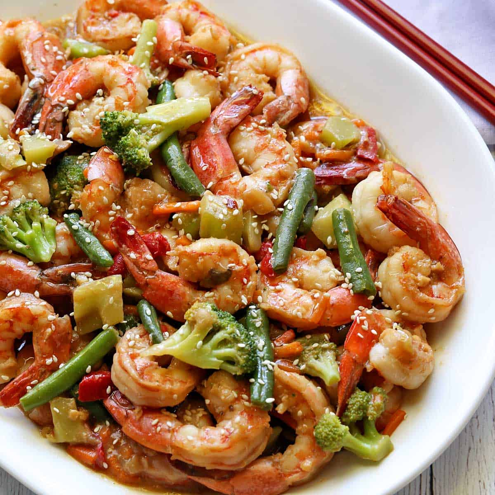

Shrimp Stir Fry is a quick and healthy meal that everyone loves!
Ingredients/Variations
VEGETABLES
PROTEIN
Flavor
To make prep faster, check the produce area in your grocery store, many stores carry fresh chopped stir fry
veggies.
Prepare the sauce first and set aside.
Gently saute shrimp until they just turn pink. They’ll cook a little bit more when combined with the
sauce so be sure
not to overcook them. Remove and set aside.
Stir fry the veggies I chose broccoli and peppers but you can use whatever veggies you want.
Add the shrimp and sauce and cook a few minutes until bubbly. Season with salt and pepper to taste.